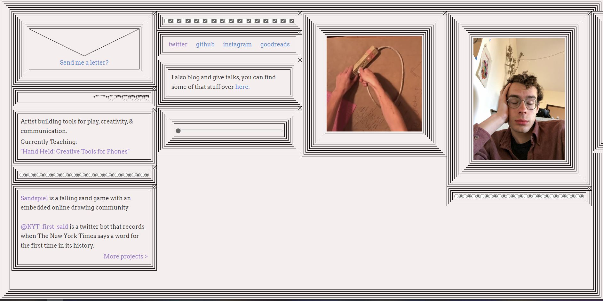

Week 2
1. What was the first thing you paid attention to when interacting with the experience?
The lines used as the background and as the borders for each sections alignment.
2. Spend two minutes with the experience and create a list of each of your discrete actions.
The first thing that I felt were in the way of this uniquely decorated website
3. What part of the experience did you spend the most time engaging with?
Scrolling and opening each links which showed the website owner's works and blogs.
4. What was the most common action in your two minute interaction with the experience?
Scrolling through the very long pages of words and documents.
5. What is your impression of the intended primary goal of the interactive experience?
To see different and unique websites.
6. What is your impression of how the interactive experience communicates its primary goal?
There are a lot of weird and random websites that I didn't expect to be used. I explored other types of "Interactive" websites through this task.
7. What is your impression of how the experience should be interacted with over time? (For how long and how many different times)
I guess it depends on the type of website- portfolio, sales, creative, games etc. I reckon a portfolio website should be easy to direct around the website, not contain too many
8. What is your impression of how the interactive experience communicates how it should be interacted with over time?
I didn't really enjoy the website. It looked really cool and all but like as I continued using the website, I found the website very inconvenient to use and with a misclick of a button, I may lose a content which I have yet to view from the page since the page is very difficult and over-designed by the designer.

A screenshot of the website.